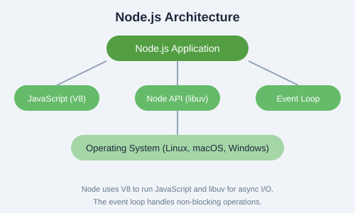
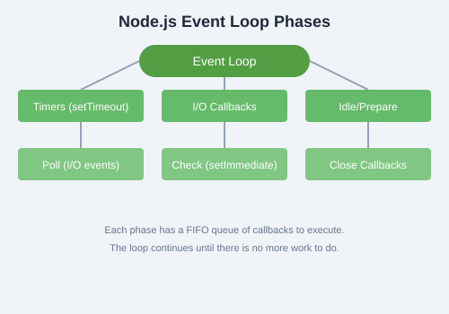

Node.js is an open-source, cross-platform JavaScript runtime environment built on Chrome's V8 engine. It allows you to run JavaScript on the server side, enabling you to build fast, scalable network applications.
Key Benefit: Node.js uses non-blocking, event-driven I/O, making it lightweight and efficient for data-intensive real-time applications.
Why Choose Node.js?
JavaScript Everywhere: Use the same language for frontend and backend.
High Performance: Built on V8, which compiles JS to native machine code.
Non-blocking I/O: Handles thousands of concurrent connections with a single thread.
Rich Ecosystem: NPM provides over 2 million packages.
Active Community: Backed by OpenJS Foundation and major companies.
System Requirements
Operating System: Linux, macOS, or Windows
Memory: Minimum 512 MB RAM (1 GB recommended)
Disk Space: At least 200 MB for Node.js and NPM
Node.js Version: LTS (Long Term Support) recommended
Node.js vs Browser JavaScript
Aspect
Browser
Node.js
Global Object
window
global
DOM/BOM
Available
Not available
Module System
ES Modules (import/export)
CommonJS + ES Modules
File System
No access
Full access (fs module)
Runtime
Sandboxed
Full system access
Command Line Basics
Node.js is primarily used through the command line. Here are essential commands:
# Check Node.js version
node --version
# Run a JavaScript file
node app.js
# Start REPL (interactive shell)
node
# Run with inspector for debugging
node --inspect app.js
# Execute a one-liner
node -e "console.log('Hello, Node!')"
The V8 Engine
V8 is Google's open-source high-performance JavaScript engine, written in C++. It compiles JavaScript directly to native machine code using JIT (Just-In-Time) compilation. Node.js embeds V8 to execute JavaScript on the server.

Node.js Architecture
Node.js consists of three main layers:
JavaScript (V8): Handles your application code and core JS execution.
Node API (libuv): Provides asynchronous I/O operations like file system, networking, and concurrency.
Event Loop: Coordinates callbacks and ensures non-blocking execution.
The Event Loop
The event loop is what allows Node.js to perform non-blocking I/O operations despite JavaScript being single-threaded. It works by offloading operations to the system kernel whenever possible.

The event loop has several phases:
Timers: Executes callbacks scheduled by setTimeout() and setInterval().
I/O Callbacks: Executes almost all callbacks except timers, close, and setImmediate.
Idle/Prepare: Used internally by Node.js.
Poll: Retrieves new I/O events and executes their callbacks.
Check: Executes setImmediate() callbacks.
Close Callbacks: Executes close event callbacks (e.g., socket.on('close')).
Tip: Understanding the event loop is crucial for writing performant Node.js applications. Always avoid blocking the event loop with synchronous operations.
Prerequisites
Before diving deeper, ensure you have:
Basic knowledge of JavaScript (variables, functions, loops, objects)